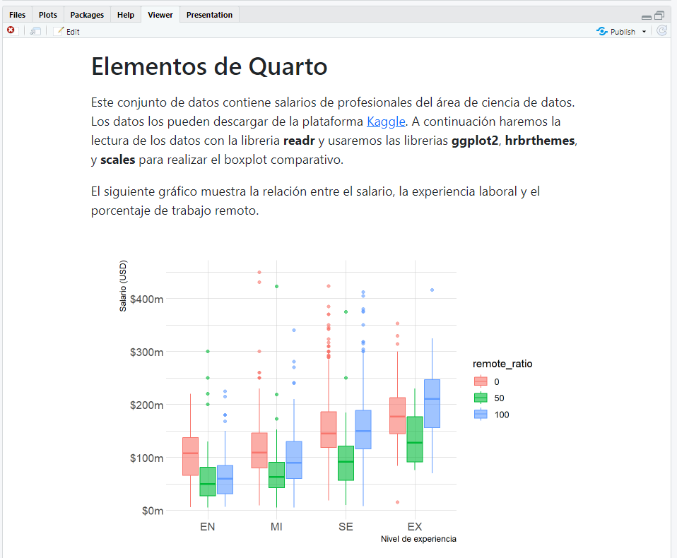

---
title: "Quarto Computations"
execute:
echo: false
---Tutorial: Elementos
Descripción general
Quarto admite bloques de código ejecutable dentro de Markdown. Esto le permite crear documentos e informes totalmente reproducibles: el código necesario para producir su salida es parte del documento mismo y se vuelve a ejecutar automáticamente cada vez que se procesa el documento.
En este tutorial, le mostraremos cómo crear documentos computacionales totalmente reproducibles con Quarto en RStudio.
Si desea seguir paso a paso en su propio entorno, descargue el documento Quarto (.qmd) a continuación, ábralo en RStudio y haga clic en  Render (o use el método abreviado de teclado: Windows:Ctrl+Shift+K ó Mac:⇧⌘K). Recomendamos también marcar la casilla Render on Save para obtener una vista previa en vivo de sus cambios.
Render (o use el método abreviado de teclado: Windows:Ctrl+Shift+K ó Mac:⇧⌘K). Recomendamos también marcar la casilla Render on Save para obtener una vista previa en vivo de sus cambios.
Salida de celdas
De forma predeterminada, el código y su salida se muestran dentro del documento representado.

Sin embargo, para algunos documentos, es posible que desee ocultar todo el código y solo mostrar el resultado. Para hacerlo, especifique echo: false dentro de la opción de ejxecute en el YAML.
Si marcó Render and save antes, simplemente guarde el documento después de realizar este cambio para obtener una vista previa en vivo. De lo contrario, renderice el documento para ver sus actualizaciones reflejadas. El resultado se verá como el siguiente.

Es posible que desee habilitar selectivamente el echo para algunas celdas. Para hacer esto agregue la opción de la celda echo: true. Intente esto con el bloque etiquetado boxplot.
#| label: boxplot
#| echo: true
#| warning: false
salarios$experience_level <- factor(salarios$experience_level, label=c("EN", "MI", "SE", "EX"))
salarios$remote_ratio <- factor(salarios$remote_ratio, label=c(0,50,100))
ggplot(salarios, aes(y=salary_in_usd, x=experience_level, fill=remote_ratio,
col = remote_ratio)) +
geom_boxplot(alpha=.6) +
theme_ipsum() +
ylab("Salario (USD)") + xlab("Nivel de experiencia") +
scale_y_continuous(labels = label_number(scale = 1e-3, prefix = "$",
suffix = "m", accuracy = 1)) Guarde el documento nuevamente y tenga en cuenta que el código ahora está incluido para el fragmento del boxplot.
La opción de echo se puede establecer en true, false o fenced. El último podría ser de especial interés para escribir documentación y materiales didácticos, ya que le permite incluir el delimitador de código delimitado en su salida de código para enfatizar que el código ejecutable requiere ese delimitador. Puede leer más sobre esta opción en la documentación de Fenced Echo.
Hay una gran cantidad de otras opciones disponibles para la salida de la celda, por ejemplo, warning para mostrar/ocultar advertencias (que puede ser especialmente útil para mensajes de carga de paquetes), include como captura general para evitar que se incluya cualquier salida (código o resultados) en la salida y error para evitar que los errores en la ejecución del código detengan la representación del documento (e impriman el error en el documento representado).
Consulte la documentación de Knitr Cell Options para obtener detalles adicionales.
Código oculto
En lugar de ocultar el código por completo, es posible que desee ocultarlo y permitir que los lectores lo vean a su discreción. Puede hacerlo a través de la opción de code-fold. Elimine la opción de echo que agregamos anteriormente y agregue la opción de formato HTML de code-fold.
---
title: "Elementos de Quarto"
format:
html:
code-fold: true
---Guarde el documento nuevamente y tenga en cuenta que ahora se incluyen nuevos widgets de código para cada fragmento de código.
También puede proporcionar un control global sobre esta opción de ocultar el código. Intente agregar code-tools: true a las opciones de formato HTML.
---
title: "Elementos de Quarto"
format:
html:
code-fold: true
code-tools: true
---Guarde el documento y verá que aparece un menú de código en la parte superior derecha del documento renderizado que brinda control global sobre mostrar y ocultar todo el código.
Enlace a código
La opción de code-link permite la vinculación de funciones dentro de bloques de código a su documentación en línea. Intente agregar code-link: true a las opciones de formato HTML.
---
title: "Elementos de Quarto"
format:
html:
code-link: true
---Guarde el documento y observe que las funciones ahora son hipervínculos en los que se puede hacer clic.

Tenga en cuenta que la vinculación de código se implementa actualmente solo para el motor knitr a través del paquete downlit.
Figuras
Podemos mejorar la apariencia y accesibilidad de nuestra figura. Podemos cambiar su relación de presentación configurando fig-width y fig-height, proporcionar un fig-cap, modificar su label para referencias cruzadas y agregar texto alternativo con fig-alt.
Agregaremos las siguientes opciones de fragmentos.
#| label: fig-salariousd
#| fig-cap: "Salario de profesionales en Ciencia de datos."
#| fig-alt: "Boxplot de salario versus experiencia laboral y porcentaje de trabajo remoto."
#| fig-width: 6
#| fig-height: 3.5Guarde el documento para ver el gráfico actualizado. Tenga en cuenta que también hemos actualizado la narrativa con una referencia cruzada a esta figura usando lo siguiente.
La @fig-salariousd muestra la relación entre el salario, el nivel de experiencia laboral y el porcentaje de trabajo remoto.Figuras múltiples
Agreguemos otra figura a nuestro fragmento: un boxplot comparativo. Nuestro objetivo es mostrar estas figuras una al lado de la otra (es decir, en dos columnas), con un subtítulo descriptivo para cada figura. Dado que esto producirá una visualización más amplia, también usaremos la opción de column para distribuirla en toda la página en lugar de limitarnos a la columna del cuerpo del texto.
Hay bastantes cambios en este fragmento. Para seguir, copie y pegue las opciones que se describen a continuación en su documento Quarto.
#| label: fig-salusd
#| fig-cap: "Salario de profesionales en Ciencia de datos."
#| fig-subcap:
#| - "Salario vs Año y Tamaño compañía "
#| - "Salario vs Nivel de experiencia y Porcentaje de trabajo remoto"
#| layout-ncol: 2
#| column: page
#| cache: true
ggplot(salarios, aes(y=salary_in_usd, x=work_year, fill=company_size,
col = company_size)) +
geom_boxplot(alpha=.6) +
theme_ipsum() +
ylab("Salario (USD)") + xlab("Año") +
scale_y_continuous(labels = label_number(scale = 1e-3, prefix = "$",
suffix = "m", accuracy = 1))
ggplot(salarios, aes(y=salary_in_usd, x=experience_level, fill=remote_ratio,
col = remote_ratio)) +
geom_boxplot(alpha=.6) +
theme_ipsum() +
ylab("Salario (USD)") + xlab("Nivel de experiencia") +
scale_y_continuous(labels = label_number(scale = 1e-3, prefix = "$",
suffix = "m", accuracy = 1)) Además, reemplace el texto existente que describe la visualización con lo siguiente.
Los gráficos en la Figura @fig-salusd muestran la relación entre el salario y factores como el año, el tamaño de la compañía, el nivel de experiencia y el porcentaje de trabajo remoto.
En la Figura @fig-salusd-1 los colores están dados por el tamaño de la compañía, mientras que, en la Figura @fig-salusd-2 los colores están dados por el porcentaje de trabajo remoto.Como estamos trabajando en idioma español debemos adicionar una opción en el YAML de la siguiente forma
---
title: "Elementos de Quarto"
lang: es
---Luego, guarde el documento e inspeccione la salida renderizada, que debería tener el siguiente aspecto.
Analicemos algunas de las nuevas opciones utilizadas aquí. Ha visto fig-cap antes, pero ahora hemos agregado una opción de fig-subcap.
#| fig-cap: "Salario de profesionales en Ciencia de datos."
#| fig-subcap:
#| - "Salario vs Año y Tamaño compañía "
#| - "Salario vs Nivel de experiencia y Porcentaje de trabajo remoto"Para celdas de código con múltiples salidas, agregar la opción fig-subcap nos permite tratarlas como subfiguras.
También agregamos una opción para controlar cómo se distribuyen varias figuras; en este caso, especificamos una al lado de la otra en dos columnas.
#| layout-ncol: 2Si tiene 3, 4 o más figuras en un panel, hay muchas opciones disponibles para personalizar su diseño. Consulte el artículo Diseño de la figura para obtener más detalles.
Finalmente, agregamos una opción para controlar el espacio de la página que ocupan nuestras figuras.
#| column: pageEsto permite que la visualización de nuestra figura se extienda más allá de la columna de texto del cuerpo normal. Consulte la documentación sobre el Diseño de artículo para conocer todas las opciones de diseño disponibles.
Marco de datos
Puede controlar cómo se imprimen los marcos de datos de forma predeterminada utilizando la opción de documento df-print. Las opciones disponibles incluyen:
| Opción | Descripción |
|---|---|
default |
Utilice el método S3 predeterminado para el marco de datos. |
kable |
Tabla de markdown usando la función knit::kable(). |
tibble |
Tabla de texto plano usando el paquete tibble. |
paged |
Tabla HTML con paginación para filas y columnas (implementado usando rmarkdown::paged_table()). |
Por ejemplo, aquí especificamos que queremos impresión paginada (paged) para marcos de datos:
---
title: "Document"
format:
html:
df-print: paged
---Código en línea
Para incluir expresiones ejecutables dentro de Markdown, encierre la expresión en `r`. Por ejemplo, podemos usar código en línea para indicar el número de observaciones en nuestros datos. Intente agregar el siguiente texto de descuento a su documento en cuarto.
Existen `r nrow(salarios)` observaciones en nuestros datos.Guarde su documento e verifique la salida renderizada. La expresión dentro de los acentos graves se ha ejecutado y la oración incluye el número real de observaciones.
Si la expresión que desea incluir en línea es más compleja e involucra muchas funciones , le recomendamos incluirla en un fragmento de código (con echo: falso) y asignar el resultado a un objeto. Luego, puede llamar a ese objeto en su código en línea.
Por ejemplo, supongamos que desea indicar cuál es el salario máximo por nivel de experiencia. Primero se calculan estos valores en un fragmento de código
#| echo: false
#| warning: false
library(dplyr)
salarios %>%
group_by(experience_level) %>%
summarize(max_salaries = max(salary_in_usd)) -> maxsalariosLuego, agregue el siguiente texto de markdown a su documento Quarto.
El salario máximo de los profesionales con un nivel de experiencia de EN es de `r maxsalarios$max_salaries[1]`, mientras que para un nivel de experiencia de EX el salario máximo es `r maxsalarios$max_salaries[4]`.Guarde su documento e verifique la salida renderizada.
Almacenamiento en caché
Si su documento incluye fragmentos de código que tardan demasiado en calcularse, es posible que desee almacenar en caché los resultados de esos fragmentos. Puede usar la opción de cache a nivel de documento usando la opción de ejecución YAML.
execute:
cache: trueSin embargo, puede que no sea preferible almacenar en caché todos los fragmentos de código de un documento. También puede indicar qué fragmentos deben almacenarse en caché directamente con una opción de fragmento.
#| cache: trueIntente agregar esta opción de fragmento a uno de los fragmentos de código en su documento que produce un gráfico y guárdelo. Cuando se procesa el documento, verá que se ha creado una nueva carpeta en su directorio de trabajo con el mismo nombre que su documento y el sufijo \_cache. Esta carpeta contiene los resultados en caché. Puede encontrar más información sobre el almacenamiento en caché en documentos Quarto en la documentación de Caché.
Si siguió paso a paso este tutorial, ahora debería tener un documento Quarto que implemente todo lo que cubrimos. De lo contrario, puede descargar una versión completa de Elementos.qmd a continuación.